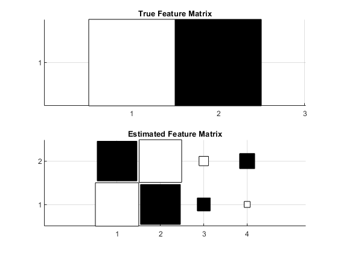

clear all
close all
map='diff';
K = 4;
T = 200;
algorithm='BP';
[u,y,A] = nca_create_data (map, K, T);
M.verbose = 1;
switch algorithm
case 'ML',
disp('Maximum Likelihood Algorithm');
M = nca_org (u', y', M);
case 'BR',
disp('Bayesian Regularization Algorithm');
M.prune_its_min=1000;
M = nca_prune (u', y', M);
case 'BP',
disp('Bayesian Pruning Algorithm');
M = nca_prune (u', y', M);
otherwise
disp('Error in demo_nca_synth.m: unknown algorithm');
return
end
figure
subplot(2,1,1);
hinton(A);
title('True Feature Matrix');
subplot(2,1,2);
hinton(M.A);
title('Estimated Feature Matrix');
Bayesian Pruning Algorithm
It 1 Step Size = 0.4344, Log Joint =-79.61
It 2 Step Size = 0.1296, Log Joint =-69.23
It 3 Step Size = 0.0564, Log Joint =-68.48
It 4 Step Size = 0.0364, Log Joint =-67.63
It 5 Step Size = 0.0237, Log Joint =-67.32
It 6 Step Size = 0.0193, Log Joint =-67.05
It 7 Step Size = 0.0149, Log Joint =-66.86
It 8 Step Size = 0.0138, Log Joint =-66.71
It 9 Step Size = 0.0103, Log Joint =-66.58
Removing row, LogBF=5.73
Removing row, LogBF=5.51
It 10 Step Size = 0.0438, Log Joint =-66.22
It 11 Step Size = 0.0263, Log Joint =-66.20
Correct Rate = 0.82
